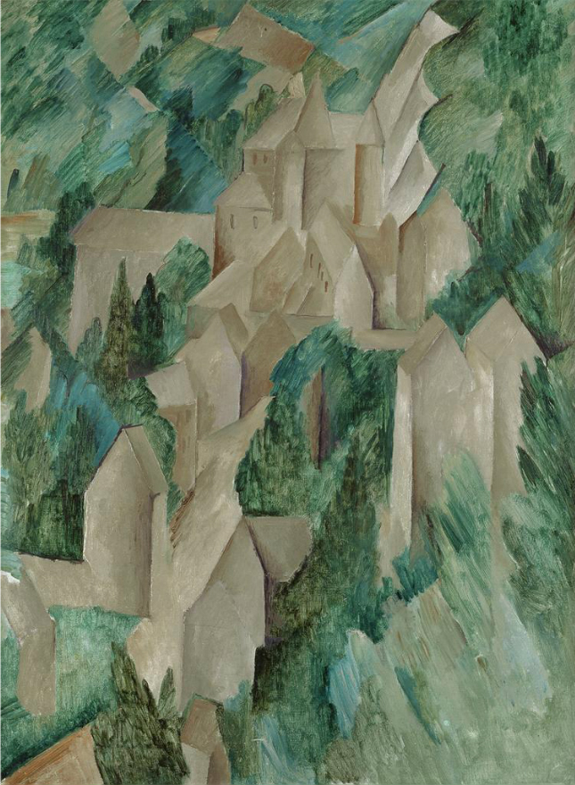
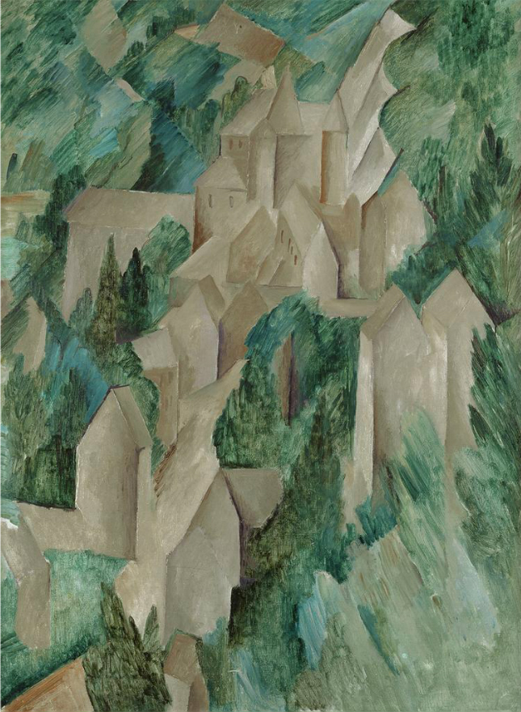
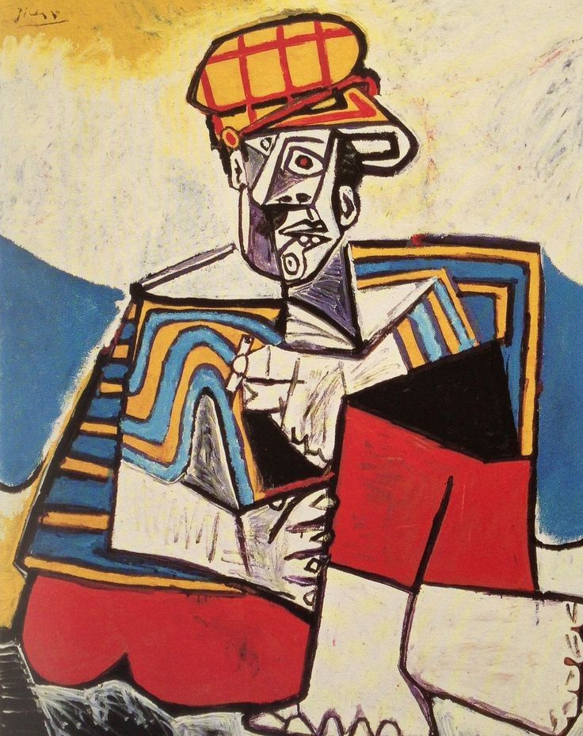
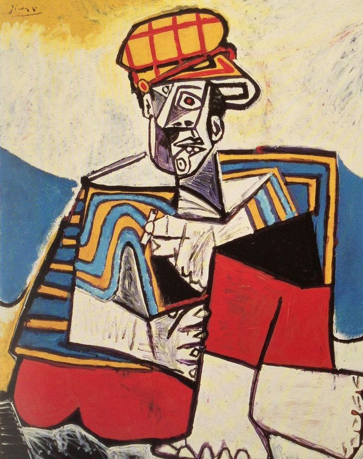

Cubism, highly influential visual arts style of the 20th century that was created principally by
the artists Pablo Picasso and Georges Braque in Paris between 1907 and 1914.
Cubism was one of the most influential styles of the twentieth century. It is generally agreed to
have begun around 1907 with Picasso’s celebrated painting Demoiselles D’Avignon which included elements
of cubist style. The name ‘cubism’ seems to have derived from a comment made by the critic Louis Vauxcelles
who, on seeing some of Georges Braque’s paintings exhibited in Paris in 1908, described them as reducing
everything to ‘geometric outlines, to cubes’.
Though Cubism emerged in the art world, it soon inspired related movements in architecture, design, and literature.
Unlike in art, cubism in architecture didn’t spread around the globe. Actually, it took hold almost exclusively in the
Czech Republic.Cubist architecture flourished all around Prague and other Czech cities in the short period before World
War I. After the war, the style evolved in what is known as Rondocubism, again only in the Czech Republic.
Cubist architects were searching for a new concept of functionality. According to them, architecture shouldn’t be only a
space to live and work, but also one for the human soul. They believed that traditional architecture was soulless, thus
they applied dynamism to all of their creations.
Notice the broken lines and pyramidal shapes visible on cubist façades. Cubist architecture has several characteristics: three-dimensional
façade decorations, split horizontal and vertical surfaces, and relatively conservative floor plans.
SAMPLE PROJECTS-touch the images and go to project descriptions
 

 
